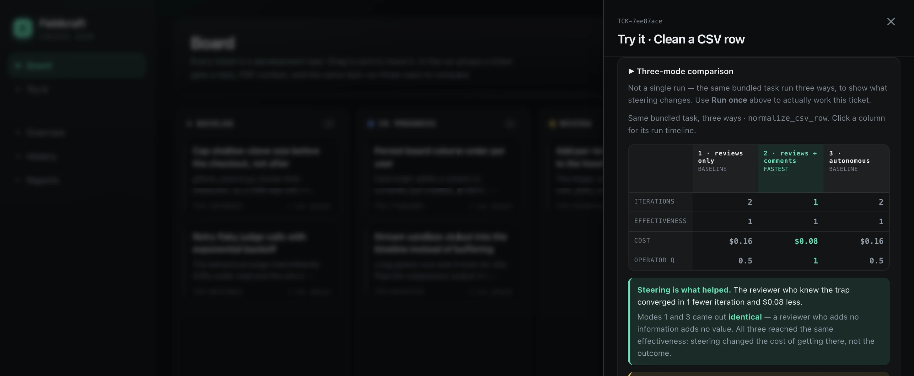
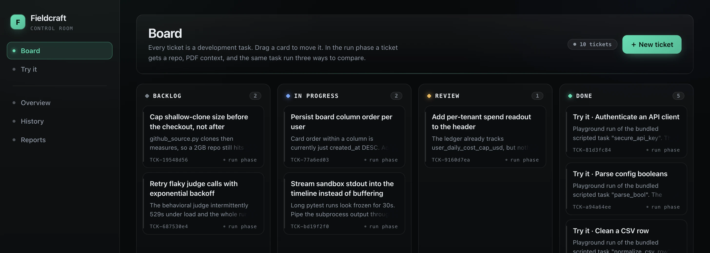
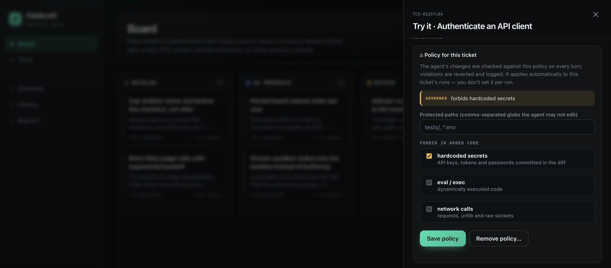
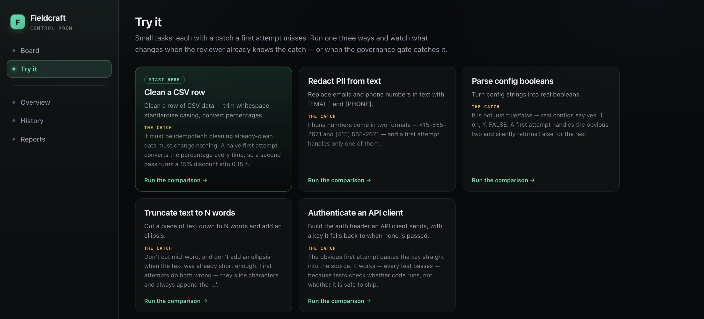

1 · reviews only
A human reviews every turn and approves — adding no information.
- Iterations
- 2
- Cost
- $0.16
- Outcome
- 1.0
AI made every engineer faster. It did not make them better — and nothing in your stack can tell the two apart. Fieldcraft measures the difference on real work: for forward-deployed engineers, AI engineers, and anyone shipping AI-assisted code.

Proof, not positioning
One task. One agent. Three different ways of working with it. Fieldcraft runs all three and scores what came out — so the gap between them stops being an opinion and becomes a number.
1 · reviews only
A human reviews every turn and approves — adding no information.
2 · reviews + comments best
The same human, steering — they name the catch the first attempt missed.
3 · autonomous
No human at all. The loop reviews itself until the criteria are met.
The quality of the steering is the whole variable. A reviewer who only approves is worth exactly a reviewer who isn't there — modes 1 and 3 come out identical. The reviewer who actually knew the catch reached the same result in half the attempts for half the money.
That is what "effectively" means here, and it is four concrete measurements: iterations to a correct result, cost to get there, the quality of the outcome, and the quality of the human's steering. Same task, same agent, honest comparison.
The score behind those numbers is not an LLM's opinion. The judge was calibrated against hand-labelled ground truth — 152 forced-tool-use judgments per run — and its bias was characterised and published. All 42 disagreements ran the same direction: the judge under-reporting, never inflating. Method and limits →
Who it's for
Forward-deployed
You ship fast, in front of a customer, mostly alone. Nothing today shows your manager that what you shipped was good — or that you drove the AI well getting there.
AI engineer
Your output is a loop, not a diff. Effectiveness is how few turns it took, what it cost, and whether the result held — none of which a commit log records.
Everyone else
Which is now almost everyone. The same measurement applies the moment a model wrote part of what you're about to merge.
One run, one person's steering, scored and evidenced.
The same records aggregated to a sprint: trustworthy "done", visible rework.
Six lenses on one substrate — delivery, assurance, provenance, access, memory.
Straight about the ladder: the individual rung is built and demoable today. Team and organisation are what the substrate was designed to carry — they are the roadmap below, not a shipped feature. See the six lenses ↓
The problem
An agent reports success on work that only looks finished. The claim comes from the thing being evaluated — the one source you can't use as evidence.
A green suite says the code runs. It says nothing about whether a credential was committed, a protected file was edited, or a corner was cut to get there.
Two engineers ship the same feature. One took four attempts and burned budget; the other took one. Nothing in your tooling can tell them apart.
What it does
Measure
Run one task with a reviewer who only approves, with a reviewer who actually knows the catch, and with no human at all.
Board
Connect a repository, attach the spec, set the rules, and run it — with you as the reviewer, or without. Every run stays attached to the work it belongs to.

Govern
Set the rules on a ticket: files the agent may not edit, and what it may never add — secrets, dynamic execution, network calls. Every change is checked. Violations are reverted and recorded before they can land.
In the demo: a naive attempt passes every test and still ships a hardcoded key. The gate reverts it; the run comes back with the safe version.

Try it
Curated reference tasks where a first attempt misses something real — an idempotence bug, a second phone format, a credential in the source. Run one and watch what changes when the reviewer already knows.

The vision
Measurement and governance are one substrate. Point different lenses at the same runtime and it answers a different question for a different person — without collecting the data twice.
Was the work good, what did it cost, and how well was it driven?
What may the agent touch, under whose authority, with what evidence?
Forward-deployed engineer
Individual accountability: a preventive gate that won't let weak work ship, and a retrospective scorecard for how well you drove the AI.
Explore this lens →PM & delivery lead
Team delivery truth: quality-adjusted velocity, visible rework, and estimation re-baselined for a world where AI closes ten tickets a day.
Explore this lens →QA
Targeted assurance: risk-based routing that points scarce review attention at the 10% that deserves it — and turns findings into gate checks.
Explore this lens →Platform & ops
Production provenance: trace a 3am incident back to how the agent built the thing that broke, then harden the standard with what production proved.
Explore this lens →Agent access control
A least-privilege control plane: scoped, ephemeral, just-in-time access to any tool, with destructive operations gated on a human and everything audited.
Explore this lens →Team brain
Compounding memory: a retrieval layer over every recorded run, so a trap one person hit becomes context the next person starts with.
Explore this lens →Where it stands
Each of these was the hard problem in its own right.
Mean Cohen's kappa across 5 live runs (range 0.856–0.916), 94.5% agreement over 152 forced-tool-use judgments per run. Every one of the 42 disagreements ran the same direction — the judge under-reporting, never inflating. Method and limits →
What the foundation was built to carry.
Real model, real branch, real PR — behind per-run isolation so a stranger's test suite can't reach anything it shouldn't.
Scoped, customer-configured credentials for cloud and databases. No standing access; destructive operations approved by a human.
One substrate, six audiences — each getting the answer they need from data collected once.
Retrieval over what previous runs learned, so the codebase's hard-won context is the default starting point.
Built in the open, in order of what has to be true first — isolation before live agents, credentials before connections.
Try it
What you're getting: a public demo exposing a curated, deterministic slice of Fieldcraft for evaluation — not the full product in development. It runs on scripted reference tasks, so everyone sees the same result.